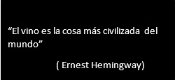

UNA BEBIDA MILENARIA

El vino es bebida nacional en Uruguay, compañero de comidas, cultura, tradición, trabajo rural y bandera del país en el exterior. La vitivinicultura tiene una antigua tradición, realizándose la elaboración de vinos en forma doméstica o artesanal desde la época colonial. Para hacer un buen vino, se precisa cabeza, paciencia e inteligencia. La actividad vitivinícola, particularmente, fue impulsada por hombres de origen mediterráneo, quienes a fines del siglo XIX comenzaron a ensayar los procedimientos para implementar una forma industrial. El país goza de una de una posición geográfica privilegiada que le permite ser un excelente productor de vinos finos. Ubicado entre los paralelos 30 y 35 (latitud sur), como las mejores zonas vitivinícolas de Argentina, Chile, Sudáfrica, Australia y Nueva Zelanda. Con 900 hectáreas cultivadas y cosechadas a mano Uruguay ha logrado la consagración internacional con sus vinos de gran calidad.
CÓDIGOS DE CONDUCTA SOCIALMENTE LEGITIMADOS ENTORNO AL VINO
Una copa de vino simboliza muchas cosas para quien la tiene es sus manos, el final de una larga cadena de trabajo que comenzó con la cosecha del fruto en la planta y la elaboración en bodega de una bebida milenaria. Un estallido de matices que en contacto con las papilas gustativas de quien lo toma produce sensaciones dulzor, salinidad, acidez y amargor sabores capaces de activar las terminales del sentido del tacto. En torno al vino se han construidos hábitos sociales en un tiempo determinado, códigos de conducta legitimados por su gente.
VALOR DE PATRIMONIO